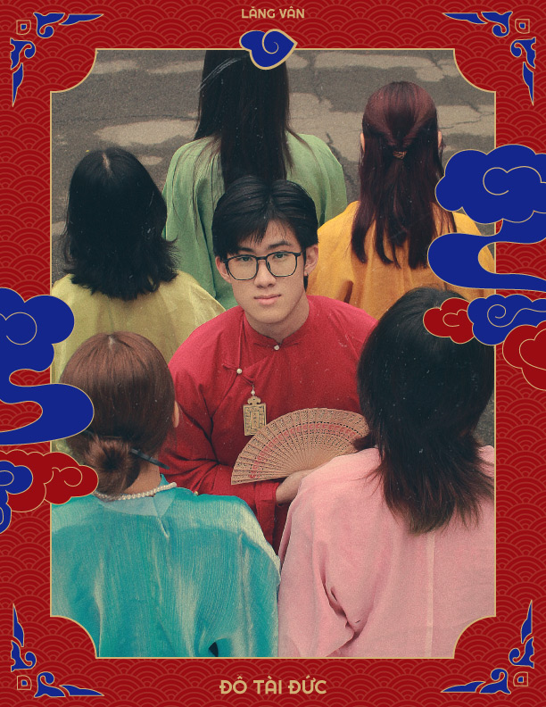

|  |
Một chút xíu về: ________________Đỗ Tài Đức
|
|---|
"Xin chào mọi người, tôi tên là Đỗ Tài Đức, sinh ra và lớn lên tại mảnh đất đầy bình yên và thân thiện mang tên Hải Phòng - nơi có những con người vô cùng “hiền lành” và “mến khách” nếu có dịp xin mời mọi người đến quê hương tôi để trải nghiệm những đặc sản như bánh đa cua, bánh mì que và đặc biệt là hoa cải nhé =))) Nói về bản thân, tôi là một người rất đam mê chơi game và thể thao đặc biệt là xem bóng đá Tôi là một "huấn luyện viên" trên sân cỏ online, một "fan cứng" của Manchester United vì vậy mọi người luôn bảo tôi là một người lúc nào cũng lạc quan. Còn về chiến trường ảo là nơi tôi hóa thân thành "xạ thủ" tài ba trong PUBG Mobile, chiến đấu cùng anh em cùng học cách ghìm tâm, đi “bo” và trao cho nhau những lời yêu thương khi chết nhảm. Trong Lăng Vân tôi đảm nhận vị trí “đẹp trai” nhất nhóm và code dạo. Hãy liên hệ với tôi để cùng nhau "chém gió", "chém bóng đá", và "chém" tất cả những gì bạn muốn thông qua các thông tin dưới đây nhé anh em!!! Xin cảm ơn mọi người đã lắng nghe phần trình bày của tôi."